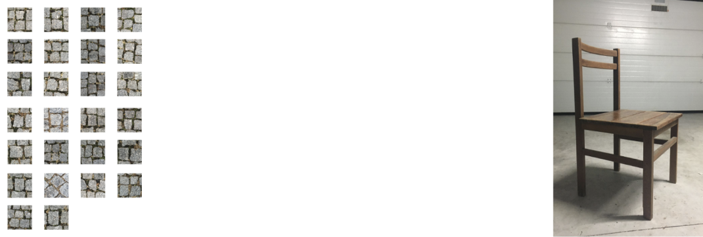
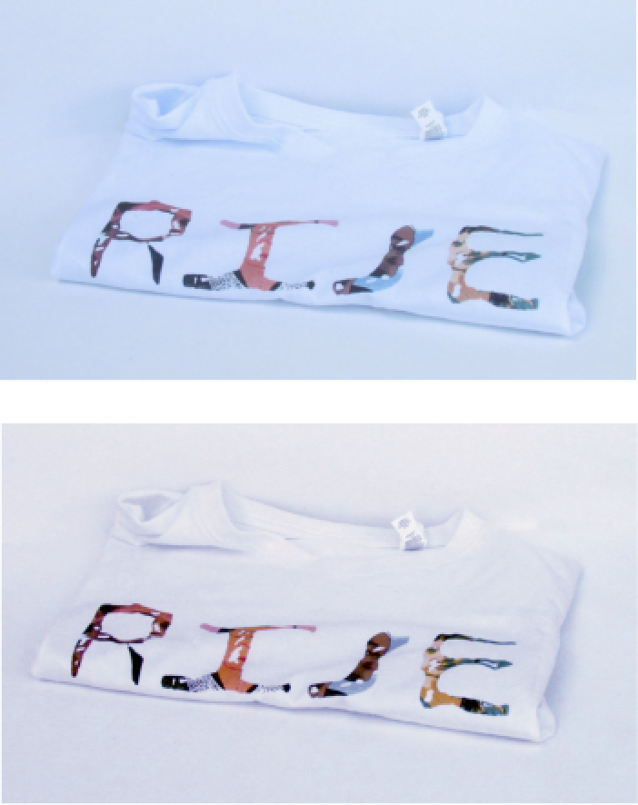
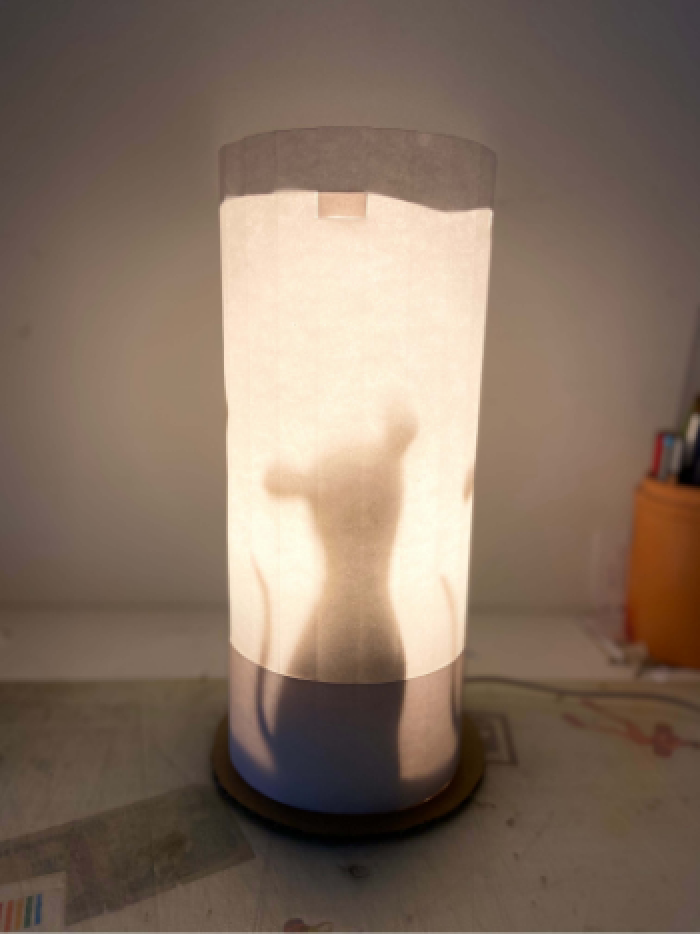
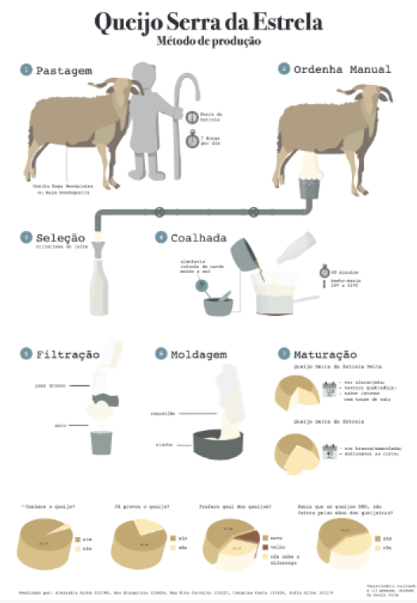
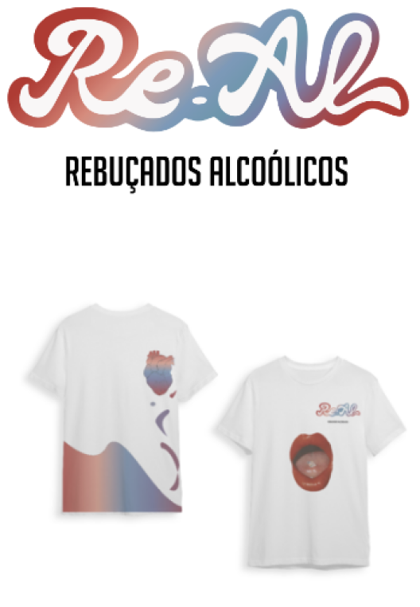
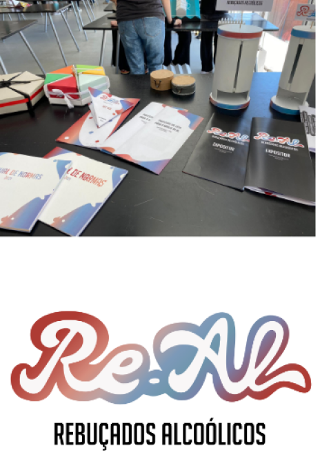
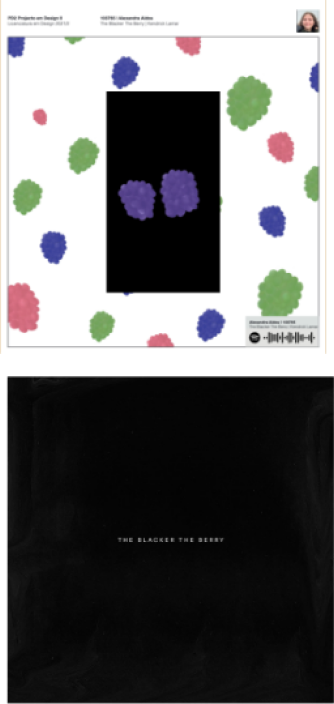
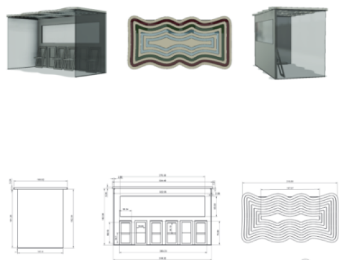
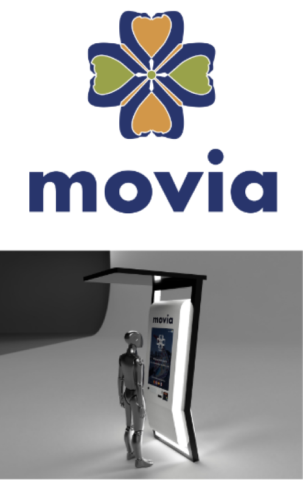

Alfabeto no quotidiano
Projeto em Design Básico 2020
Este trabalho teve como objetivo pensarmos “fora da caixa” e
como foi o 1º trabalho que nos foi apresentado, penso que não poderia ter sido mais perfeito. Para
este trabalho, foi nos sugerido olharmos para o nosso quotidiano e tentarmos encontrarmos todas as
letras do alfabeto. Não foi uma tarefa fácil, mas encontrei o meu tema no chão, mais especificamente
na calçada.
Cadeira Explodida
Projeto em Design Básico 2020
Para este projeto, foi nos pedido que escolhêssemos uma
cadeira à nossa escolha e que realizássemos a desmontagem, de maneira a poder compreender todos os
encaixes complexos que as cadeiras tem. Este processo permitia uma análise morfológica e funcional das
cadeiras, para um futuro entendimento de propriedades físicas de vários materiais.


T-Shirt
Projeto em Design Básico 2021
Neste exercício tínhamos que refletir sobre a capacidade de
comunicar dos seus projectos, partindo da exploração de metáforas visuais que os substanciem. Tínhamos
como objetivo desenvolver uma composição tipográfica que potenciava a figura de estilo que escolhemos.
Este trabalho funcionou em conjunto com o primeiro trabalho que realizamos, o alfabeto.
Artefacto de iluminação
Projeto em Design Básico 2020
Este projeto é bastante inspirado no filme Ratatouille, o
objetivo deste candeeiro é esconder os ratos e é uma metáfora para a sociedade que se esconde atrás de
máscaras, que neste caso são representados por uniformes, para ser aceite na mesma e para esconder o
invulgar.
Desenvolvimento de uma marca
Projeto em Design I 2021
A Re.Al é uma marca que criamos, do setor dos rebuçados. Através da
criação de uns rebuçados medicinais com sabor a bebidas alcoólicas, pretendemos apresentar uma ideia
refrescante no mercado estagnado deste tipo de rebuçados.
Animação
Projeto em Design II 2021
O tema que escolhi foi lançado em 2015, no entanto ainda se pode
aplicar à atualidade. Achei importante retratar uma música de um artista que é alvo dessa injustiça
racial por parte do sistema. Para a animação o título da música foi fundamental, representei os abusos
sofridos por esta comunidade e como esta saí mais unida.
Bilheteira de moliceiros
Projeto em Design II 2022
Este trabalho foi bastante interessante de se realizar. Foi
intrigante perceber o quão diferente mas semelhantes as várias áreas de design com que trabalhamos.
Cativante é a maneira como todo o processo é interligado e dependemos um dos outros para o processo se
desenvolver de maneira a que seja um projeto bem executado.
Indústria alimentar portuguesa
Projeto em Design I 2021
O queijo da Serra é curado, e pode apresentar uma textura
amanteiga-da de cor branca-amarelada (Queijo Serra da Estrela) ou mais dura de cor laranja acastanhada
(Queijo Serra da Estrela Velho). É feito a partir de leite cru de ovelha. Na Serra existem 2 principais
raças destes animais: Bordaleira da Serra da Estrela e Churra Mondegueira.
Desenvolvimento de produto
Projeto em Design I 2021
Trazendo a ideia de “festa no bolso”, juntando o clássico ao
moderno, pretendemos que este produto se torne um staple no inventário de todos os jovens. Os rebuçados
não teriam teor alcoólico, apenas o sabor das bebidas. Desenvolvemos esta representação gráfica, com o
objetivo de transparecer os ideais e estética da marca, isto é, a junção do antigo com o moderno.
Mobiliário Urbano
Projeto em Design II 2022
O meu principal objetivo neste trabalho era fazer uma paragem que
abrigasse as pessoas e que provocasse um conforto e bem-estar a todos os utilizadores. Embora o tempo de
utilização das pessoas não seja longo, a tranquilidade que as pessoas sentem nestes espaços ao estarem
abrigadas e confortáveis de todas as situações meteorológicas entre outras.





